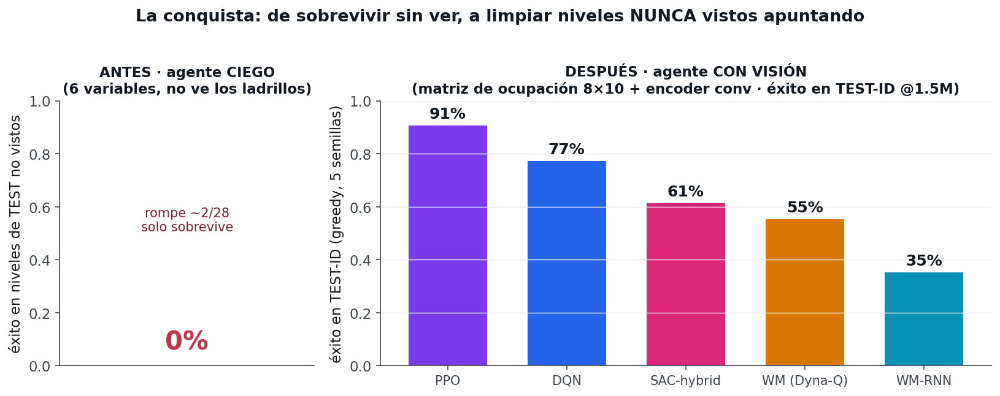
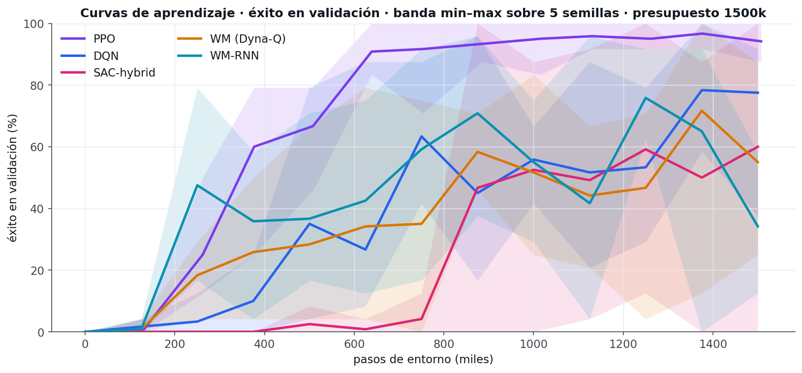
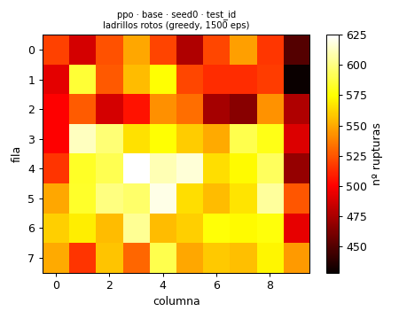
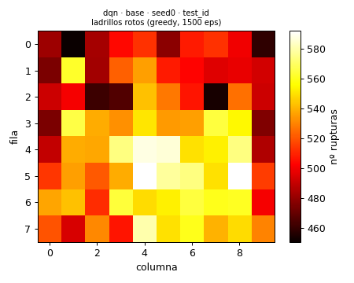
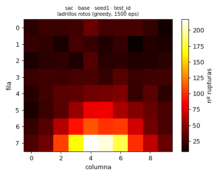
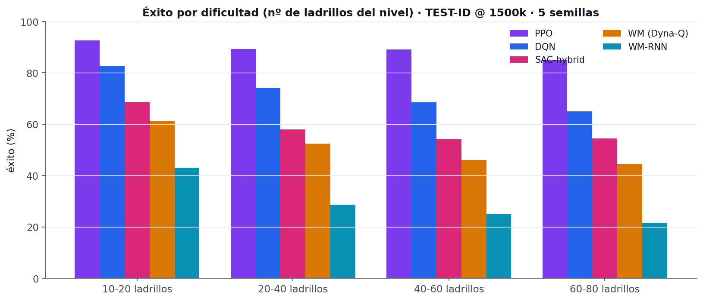

El objetivo no es que el agente «sobreviva» moviendo la pala, sino que resuelva el nivel: que rompa todos los ladrillos. Y no en un nivel que ha practicado mil veces, sino en niveles nuevos, con los ladrillos colocados de formas que no ha visto. Eso es lo difícil, y es lo que de verdad mide si ha aprendido a jugar en lugar de memorizar.
Para que «niveles nuevos» signifique algo, separamos desde el principio los niveles en dos bolsas que no se tocan: una para entrenar y otra, oculta, para examinar. El agente nunca entrena con los niveles del examen. Y medimos sobre tres exámenes distintos, de menos a más exigente:
Mismo «estilo» que el entrenamiento (mismas familias de patrones) pero niveles concretos no vistos. Mide si generaliza dentro de lo conocido.
Familias estructuralmente nuevas (túneles, diagonales, anillos, huecos centrales…). Mide si generaliza a formas que nunca vio.
Niveles más densos (casi llenos). Mide si aguanta cuando hay muchísimos ladrillos.
El primer agente solo veía seis números: la posición y la velocidad de la bola, y la posición de la pala. Nada más. En particular, no veía los ladrillos. Con esa información puede aprender a poner la pala debajo de la bola y devolverla… pero no puede saber hacia dónde conviene dirigirla, porque no sabe dónde quedan ladrillos por romper.
* Ese 56% es la trampa, no un logro: en una rejilla llena, una bola que rebota durante ~2.200 pasos acaba tocando casi todo por pura física. Es supervivencia degenerada, no inteligencia. En cuanto los ladrillos están dispersos, hay que apuntar — y ahí el ciego se queda en 0%.
Cada partida (un episodio) tenía un límite de pasos. Si se agotaba, la partida terminaba «en tablas». El problema: limpiar todos los ladrillos exige muchos pasos, y el límite estaba puesto demasiado corto. Ganar no era difícil: era literalmente imposible, porque no daba tiempo material.
Para «ayudar» al agente le dábamos una recompensa extra, Φ (shaping), por acercar la pala a la bola. La intención era buena; el efecto, un sabotaje. Esa recompensa arreaba al agente hacia un rebote casi vertical y una estrategia degenerada: mantener la bola arriba sin importar dónde, limpiando como mucho una columna. Optimizaba el premio… alejándose del objetivo.
Arreglado el reloj y la exploración, el ciego seguía sin apuntar: ganaba por supervivencia en niveles llenos (≈56%) pero 0% en dispersos. Este es el muro de verdad: sin ver los ladrillos no se puede apuntar ni generalizar. Ninguna cantidad de entrenamiento arregla una observación incompleta.
La solución no fue un algoritmo nuevo, sino replantear la tarea. Cinco cambios, cada uno atacando una causa concreta:
Es importante ser honestos con qué ve el agente ahora. No le damos la imagen del juego ni le explicamos las reglas. Le damos una matriz 8×10 que dice, por cada celda, si hay ladrillo o no (1/0), más los seis números de antes (bola y pala). Es una representación estructurada y ligera, no percepción visual desde píxeles como en el Atari clásico.
En vez de un único nivel fijo, generamos cientos de niveles con familias de patrones (dispersión, filas, columnas, bloques, simétricos) y los repartimos en train y test disjuntos. El agente entrena primero con los fáciles (pocos ladrillos) y va desbloqueando los difíciles a medida que mejora — un currículo, como un temario que sube de nivel. Así no memoriza un nivel: aprende una política general.
Qué conseguimos y qué significa. Con la tarea bien planteada y el protocolo congelado, varios agentes pasan de no limpiar nada a resolver la mayoría de niveles no vistos. Esta es la imagen que lo resume:

No reportamos «el mejor intento»: reportamos la distribución sobre 5 semillas. La línea es la media; la banda, el rango (mín–máx). Una banda ancha = resultado frágil (depende de la suerte de la semilla).

Si el agente ha aprendido a apuntar, los impactos se concentran donde hay ladrillos, siguiendo el patrón del nivel. Si no, se reparten al azar (o casi no hay, porque pierde la bola pronto). Compara:



Una fila por modelo y por variante honesta (SAC-pure y SAC-critic-hybrid separados). Métricas en TEST, jugando a lo seguro, media de 5 semillas, presupuesto 1,5 M. En verde, la mejor de cada columna.
| Modelo / variante | TEST-ID | OOD-patrón | OOD-dificultad | 60–80 ladr. | Colapsos | %sem>80 | Pasos/limpiar | Comentario |
|---|---|---|---|---|---|---|---|---|
| PPO | 91% | 89% | 86% | 85% | 0% | 100% | 1923 | El mejor y el más fiable. |
| SAC-pure (actor) | 87% | 84% | 68% | 62% | 0% | 80% | 2732 | El actor SÍ funciona (ver §6). |
| DQN | 77% | 74% | 64% | 65% | 0% | 80% | 2125 | Necesita presupuesto; estable. |
| SAC-critic-hybrid | 61% | 60% | 51% | 54% | 20% | 40% | 1716 | Bimodal: a veces colapsa. |
| WM (Dyna-Q cinemático) | 55% | 53% | 42% | 44% | 0% | 0% | 1977 | Techo ~55% (ver §6). |
| WM-RNN (Dyna-Q cinemático) | 35% | 29% | 27% | 22% | 0% | 0% | 1370 | No-monótono; no mejora con LSTM. |
«Colapsos» = % de semillas por debajo del 10% de éxito. «%sem>80» = % de semillas que superan el 80%. Todas las cifras salen de results/ledger.csv (160 runs reales).
El mismo experimento a tres presupuestos (700 k / 1,5 M / 3 M de pasos) cuenta quién aprende rápido y quién necesita tiempo. A 3 M, los tres model-free convergen arriba; los world-models se estancan.
| Modelo | 700k | 1,5M | 3M | Lectura |
|---|---|---|---|---|
| PPO | 90% | 91% | 87% | Aprende ya a 700k; meseta. El más sample-efficient. |
| SAC-pure | 25% | 87% | 91% | Despega entre 700k y 1,5M; arriba a 3M. |
| SAC-hybrid | 4% | 61% | 88% | Dependencia brutal del presupuesto. |
| DQN | 67% | 77% | 85% | Mejora monótona; se estabiliza con presupuesto. |
| WM (Dyna-Q) | 33% | 55% | 56% | Techo ~55%. |
| WM-RNN | 54% | 35% | 40% | No-monótono (ruido de semilla + alta varianza). |

Partimos de la receta completa (DQN, 77%) y quitamos un ingrediente cada vez. La caída mide su importancia. Hay dos sorpresas honestas.
| Ingrediente que quitamos | Éxito | Δ vs receta | Colapsos | Lectura |
|---|---|---|---|---|
| — (receta completa) | 77% | — | 0% | Referencia. |
| Escala 1.0 → 0.25 (de los ladrillos) | 1% | −76,5 | 100% | El ingrediente crítico. Atenuar la señal de ladrillos la mata. |
| Timeout constante → proporcional | 54% | −23,5 | 0% | El reloj importa, también en sentido inverso. |
| Conv → lista plana (MLP) | 57% | −20,4 | 0% | El sesgo espacial vale ~20 puntos. |
| ε-decay rápido → lento | 75% | −2,6 | 0% | Poco efecto a este presupuesto. |
| Sin currículo | 75% | −1,9 | 0% | Casi neutro a 1,5M (ayuda más a bajo presupuesto). |
| Sin shaping (Φ) | 85% | +8,0 | 0% | ¡Quitarlo MEJORA! Confirma que Φ era el saboteador. |
Ahora sí, los protagonistas — pero como reparto, no como plato principal. La estrella es el resultado; ellos lo explican.
Ajusta directamente la política (qué acción tomar) con pasos pequeños y seguros (un «clip» que evita cambios bruscos). Aquí fue el mejor y el más fiable: 91% a 1,5M, 0 colapsos, 100% de semillas >80%. Funcionó a la primera en cuanto la tarea estuvo bien planteada.
Aprende el valor de cada acción (Q) y elige la mejor. Sólido pero más hambriento de presupuesto: 67%→77%→85% conforme entrena más. Estable (0 colapsos), con alguna semilla rezagada a 1,5M.
Tiene un actor (la política) y un crítico (el valor). Aquí aparece el hallazgo que invierte la creencia previa: ver caja inferior. Honestidad: lo reportamos como dos modelos separados.
Aprenden un modelo de la dinámica e «imaginan» pasos para entrenar más rápido. Importante (honestidad): su modelo es solo cinemático (predice la bola; los ladrillos quedan fijos en la imaginación). No es un simulador del juego. Topan ~55% (MLP) / ~40% (RNN).
Los modelos basados en modelo se quedan en ~55% (MLP) y ~40% (RNN), muy por debajo de los model-free. La hipótesis natural era «el LSTM predice peor la dinámica y por eso lastra». La medimos y la refutamos: el error de predicción 1-paso del LSTM es prácticamente igual al del MLP (×1,02). El techo no lo pone el modelo, sino la dinámica solo-cinemática (los ladrillos congelados en la imaginación). La recurrencia no aporta y solo añade varianza. Es un hallazgo negativo principista: el model-based, así planteado, no ayuda — y sabemos por qué.
Hasta el mejor, PPO, falla ~1 de cada 10. ¿Es resoluble o es un techo? Lo diagnosticamos: los niveles que falla son 100% limpiables (el oráculo los limpia), el fallo está repartido entre familias (ninguna es un punto ciego), domina «pierde la bola» dejando el 71–80% sin romper (falla pronto), y no mejora con más presupuesto. Conclusión honesta: es un techo de control fino de la política, no de datos ni de visión.
Antes de medir, se congelaron (y se sellaron con un hash) el generador de niveles, los tres conjuntos de test, las semillas, los presupuestos, la receta base y la forma de evaluar. Una vez congelado, no se cambia nada entre comparaciones; cualquier cambio obligaría a re-ejecutar todo. Hash del protocolo: a1ab7ce18d7bad6b.
| Decisión | Valor congelado |
|---|---|
| Semillas | 5 (0–4); se reporta la distribución, no el mejor run. |
| Presupuestos | 700k / 1,5M / 3M pasos de entorno. |
| Evaluación | greedy (a lo seguro), sobre listas fijas de niveles no vistos. |
| Test sets | TEST-ID 500 · OOD-patrón 250 · OOD-dificultad 199 (todos limpiables, verificado). |
| Umbral colapso | una semilla «colapsa» si baja del 10% de éxito. |
| Ledger | cada run añade una fila a results/ledger.csv (160 runs). Ninguna cifra del documento existe fuera del ledger. |
El entrenamiento corre en PyTorch sobre la GPU Metal (MPS) de un Apple M3 Ultra. El entorno del juego va en numpy (CPU) y la red en GPU, así que una sola partida infrautiliza la máquina. La solución honesta: correr muchas runs independientes a la vez (cada una con su configuración congelada, bit a bit idéntica a correrla sola). Medimos el punto óptimo en 24 runs concurrentes (~5× de throughput; la GPU es el cuello). Resultado: las 75 runs de la comparativa en 64 minutos en vez de ~3 horas — sin alterar ningún número.
Arkanoid DRL Learning Lab · Edición 2 · Roberto Canales Mora con Claude · protocolo a1ab7ce18d7bad6b · todas las cifras desde results/ledger.csv